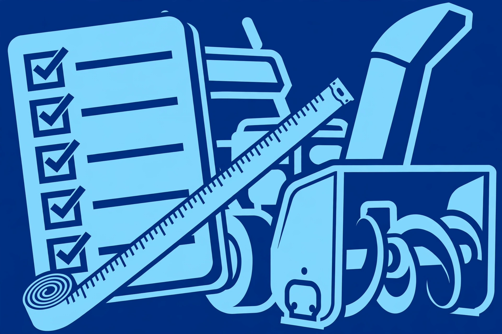

Once you've settled the power question (gas vs. electric vs. battery), the spec sheet is next. The good news: only a handful of specs actually matter for a homeowner, and they're all easy to understand once someone explains them straight. This is that explanation.
Clearing width: match it to your driveway
Clearing width is simply how wide a path the machine cuts in one pass. Wider means fewer passes — on a long, straight driveway, that saves real time and real passes in the cold. But wider also means heavier, harder to turn, harder to store, and more expensive. Measure your driveway before you shop: a machine that's roughly half your driveway's width clears it in two passes, which is a comfortable pace. For narrow walkways and gates, a narrower machine you can actually steer beats a wide one you fight around corners.
Single-stage vs. two-stage: the key split
This is the spec that matters most after power source. A single-stage machine uses one fast-spinning auger to both scoop the snow and throw it out the chute. They're lighter, cheaper, simpler, and they scrape pavement clean — great for light to moderate snow on smooth, paved surfaces. Their weakness is depth and weight: deep drifts and heavy wet snow overwhelm them, and the auger touches the ground, so they're rough on gravel.
A two-stage machine adds an impeller — a high-speed fan behind the auger that grabs the scooped snow and fires it out the chute. The auger doesn't touch the ground (adjustable skid shoes set the height), so they handle gravel and uneven surfaces, chew through deeper snow, and throw it farther. They're bigger, heavier, pricier, and more maintenance — but for serious snowfall they're the real tool. Rough rule: light snow and paved surfaces, single-stage is plenty; regular deep or heavy snow, two-stage earns its keep.
Throw distance: read it with skepticism
Manufacturers publish how far a machine throws snow, and it's tempting to treat the bigger number as better. Treat it as a rough indicator instead. Those figures are measured in ideal conditions — light, dry snow, full throttle, no wind. In heavy, wet snow on a windy day, every machine throws shorter, and a crosswind can blow it right back at you. Compare throw distances only between similar machines, and remember that controllable direction matters more than maximum distance: a chute you can aim precisely keeps snow off the neighbor's walk and out of the street.
Intake height: the drift question
Intake height is how tall a bite of snow the machine can take. It matters if your area gets drifting — a low intake on a tall drift means attacking it in layers, which works but doubles the job. For most suburban driveways it isn't the deciding spec; for open, windy properties where drifts pile up, it's worth a look.
Tires vs. tracks
Wheeled machines are the norm: lighter, easier to turn, fine for flat and gently sloped paved driveways. Tracked machines (think mini tank treads) grip better on slopes, deep snow, and uneven ground, and they don't spin and chew the way tires can — but they're heavier, pricier, and more of a workout to maneuver on bare pavement. Flat driveway? Wheels. Steep or uneven? Tracks deserve a look.
Comfort and control features worth having
A few features genuinely change the experience. Electric start (a plug-in starter button on gas machines) ends the pull-cord ritual on cold mornings. Self-propelled drive with multiple speeds turns pushing a heavy machine into steering it — a big deal on long driveways. Chute controls you can reach from the handles mean adjusting direction without stopping and walking around. Heated hand grips sound like a luxury until your third hour in a storm. None of these replace the core specs, but they decide whether you dread using the machine.
Buying used: what to check
Snowblowers are durable, and used machines can be excellent value — but inspect before you buy. Check the auger and impeller for bends, cracks, and heavy rust. Look at the belts (or ask when they were last replaced). Confirm the shear pins are intact and correct. Start it cold — a machine that starts easily cold is worth more than one that needed three tries "because it's been sitting." Look underneath for oil leaks and gearbox damage. And ask how it was stored: a machine kept dry with stabilized fuel ages gracefully; one left outside with old gas in the tank is a project, not a purchase.
Power source first. Then: single-stage for light snow on pavement, two-stage for deep or heavy snow. Width matched to your driveway, wheels for flat, tracks for slopes. Electric start and self-propelled drive are the two comfort features most owners say they'd never give up.
Before the first storm
Whether you buy new or used, run through our first-snowfall checklist before the weather turns: fresh fuel, checked oil, spare shear pins, and a test run on a dry day. Thirty minutes in October is worth more than any spec on the box.